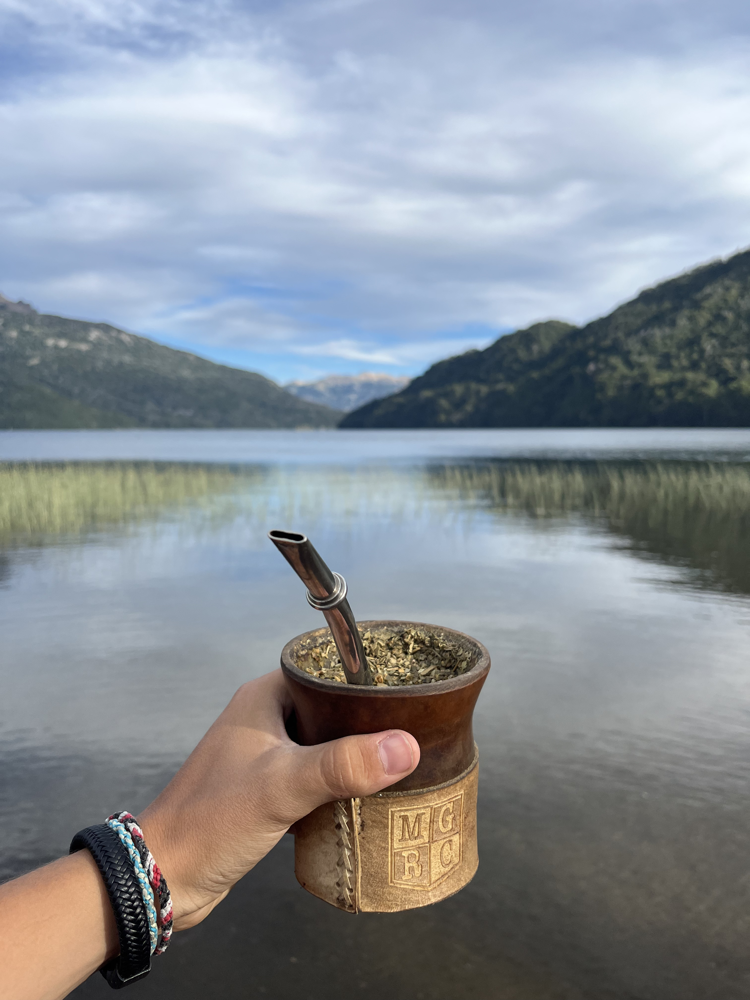
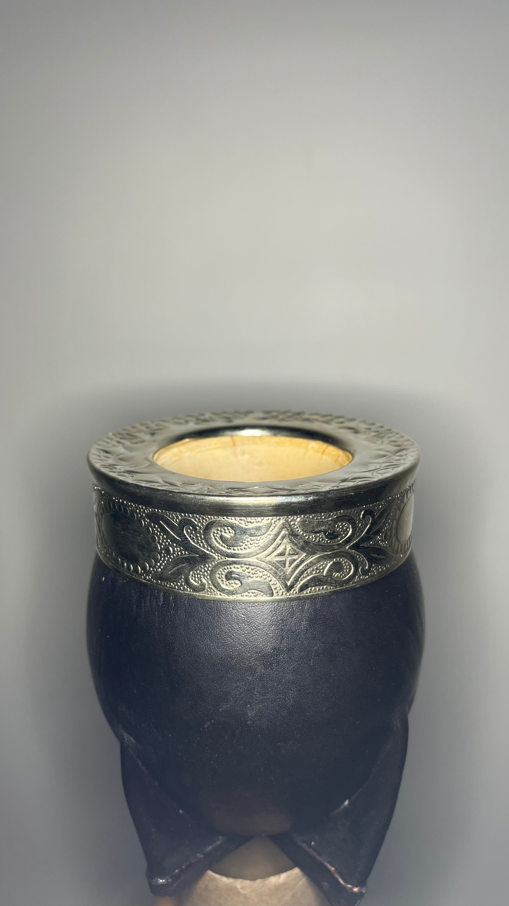
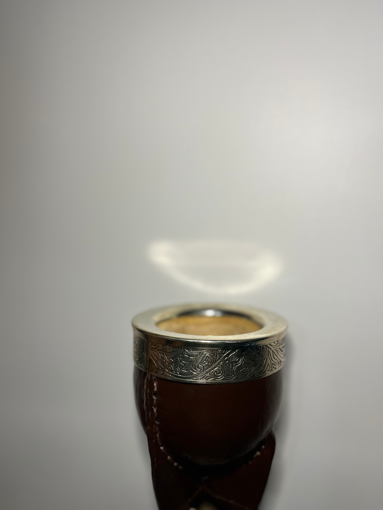
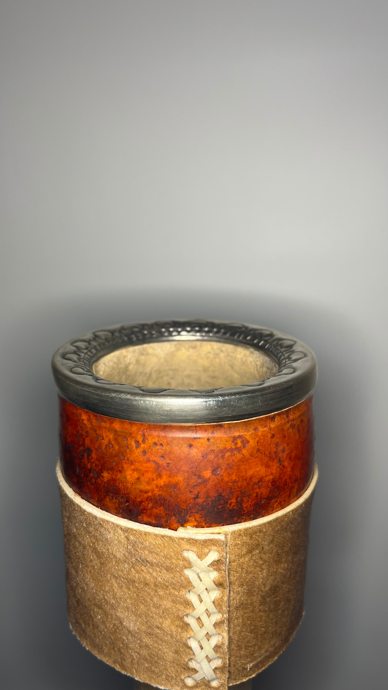
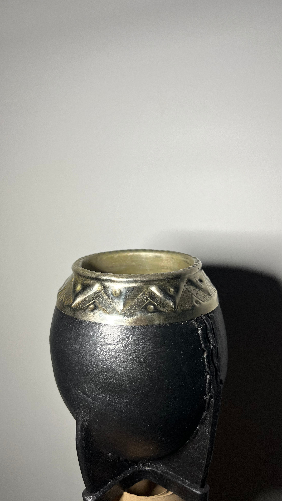

Deja volar tu imaginación para fabricar un mate único, mientras disfrutas de nuestra oferta gastronómica.

Mates más vendidos

Imperial de calabaza con exterior de cuero reforzado con virola de alpaca cincelada

Imperial de calabaza con exterior de cuero reforzado con virola de alpaca

Criollo con base de cuero crudo cocido, virola de alpaca cincelada

Torpedo de calabaza con exterior de cuero reforzado con virola de alpaca cincelada
El servicio de post venta de Puros mates es el mejor. El chico que me tomó el pedido es súper amable y está siempre dispuesto a satisfascer al cliente.